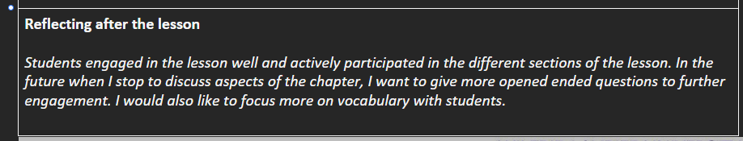

These are informal, daily reflections based on classroom moments. Each one captures a specific lesson artifact — a photo, a student interaction, or a teaching moment — and the impact it had on my thinking and future practice.
① the thingminds‑on activity
This image captures students working through the minds‑on portion of the lesson. Some hesitation is visible at the start, but the room shows focus during action/consolidation.

① the thingchapter discussion & vocabulary
A snapshot during a shared chapter reading. Students are actively participating, raising ideas. The image highlights engagement and potential for deeper questioning.